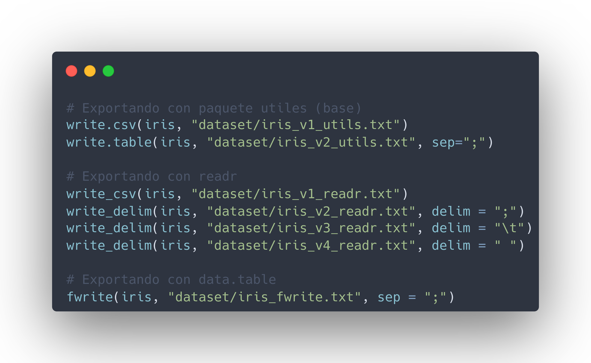
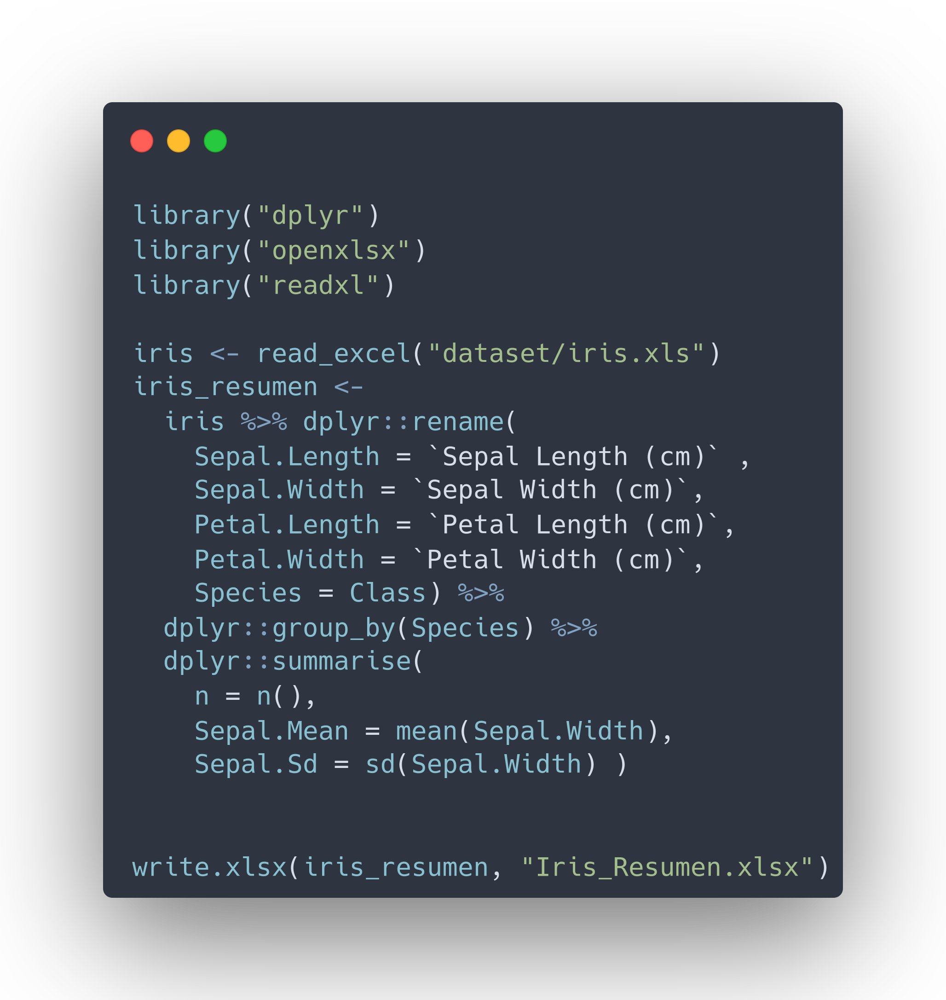

Programación en R.
Módulo 03 - Importar y exportar archivos de datos.
Agenda del Curso
Módulo 1: Introducción a la programación en R.
- Ambiente de programación.
- Tipos de datos y estructuras de datos básicos.
- Control de flujo y funciones.
Módulo 2: Manejo de datos estructurados.
- Operaciones sobre dataframes.
- Joins y funciones estadísticas.
Módulo 3: Importar y exportar archivos de datos.
- Importar y exportar archivos de datos.
- Conexión a bases de datos SQL.
Módulo 4: Visualización de datos.
- Librería ggplot2 y elementos estéticos de gráficos.
Módulo 3: Importar y exportar archivos de datos.
Importar Archivos
En
RStudio, existen al menos tres formas de importar datos.- Utilizando los menús de
Rstudio. - Utilizando la consola de
Rstudio. - Utilizando código en un script.
- Utilizando los menús de
Utilizando el menú, son las siguientes.
Environment > Import Dataset

File > Import Dataset

Tipos de Archivos
Datos en formato texto.
- csv, txt, dat, et.
Formato de otros programas.
- Excel (.xls y .xlsx)
- SPSS (.sav y .por)
- STATA (.dta)
- SAS (.sas)
Formatos propios de R
- R objects (.RData o .rda)
- Serialized R Objects (.rds)
Otros formatos
- JSON, XML, feather
Importar Texto Plano
Cuando se habla de datos de texto plano, se habla de datos tabulares (columnas son variables y filas son observaciones).
El paquerte
utilstrae por defecto, las siguientes funciones:read.csv()read.table().
Los ejemplos descritos, se encuentran en:
Código: M3_C1_script01.R
iris <- read.csv("dataset/iris.csv",
sep = ";")
- Si no recuerdas donde está el archivo, puedes utilizar
como argumento
file.choose()
iris <- read.csv(file.choose(),
sep = ";")
- La lectura con
read.tablees de la siguiente manera
iris <- read.table("dataset/iris.csv",
sep = ";")
Importar Texto Plano
Sin embargo, a través del tiempo fueron apareciendo paquetes optimizados como por ejemplo
readr.Existen algunas diferencias entre
read.csv()yread_csv(). Las funciones del paquetereadrsuelen:- Ser más rápidas
- Encajar en el paradigma de investigación reproducible.
- Producir tibbles.
Los ejemplos descritos, se encuentran en:
Código: M3_C1_script02.R

El paquete
readrlee datos tabulares con las siguientes funciones- read_delim(), read_csv(), read_tsv().
- read_fwf() y read_table().
Archivo
iris.csvesta separado por ;
iris <- read_delim("dataset/iris.csv",
delim = ";")
Importar Texto Plano
Una opción alternativa, es emplear la función
fread(del paquetedata.table).Tamaño del archivo de datos es grande, en particular, mayor a 1Gb.
datos <- fread(input = "PATH", header = TRUE, col.names = columnas, sep = ",", dec = ".", showProgress = TRUE)Los ejemplos descritos, se encuentran en:
Código: M3_C1_script03.R
library("data.table")
library("dplyr")
iris <- fread("dataset/iris.csv",
nrows = 7) %>%
select(1:2)
iris
## Sepal Length (cm) Sepal Width (cm)
## 1: 7.0 3.2
## 2: 6.4 3.2
## 3: 6.9 3.1
## 4: 5.5 2.3
## 5: 6.5 2.8
## 6: 5.7 2.8
## 7: 6.3 3.3
Exportar Texto Plano
- La exportación de datos, es bastante sencilla
pensando tanto en los paquetes
readrcomo las funciones base deutils.

Los ejemplos descritos, se encuentran en:
Código: M3_C1_script04.R
write.csvsolo puede guardar archivos de texto plano con separadores de comma.write.tablepermite guardar estos mismos archivos con diferentes tipos de separadores (,,;,|, etc).write_csvsolo guarda archivos en separadores de comma.write_delimpermite guardar estos mismos archivos con diferentes tipos de separadores (,,;,|, etc).fwriteguarda archivos con diferentes tipos de separadores (,,;,|, etc). (mucho más rápido).
Importar Archivos Excel
Algunos de los paquetes útiles para trabajar con archivos Excel y sus códigos de instalación son:
install.packages("readxl", dep=TRUE) install.packages("xlsx", dep=TRUE) install.packages("openxlsx", dep=TRUE)Carga de librerías.
library("readxl") library("xlsx") library("openxlsx")Los ejemplos descritos, se encuentran en:
Código: M3_C1_script05.R
library("readxl")
# Ruta de archivo xlsx
ruta_archivo <- readxl_example("clippy.xlsx")
# Nombres de las hojas
excel_sheets(ruta_archivo)
# Lectura data en ruta
data <- read_excel(ruta_archivo)
# Lecturas Hojas de un Excel
# Forma 1
df1 <- read_excel(ruta_archivo,
sheet = "two-row-header")
# Forma 2
df2 <- read_excel(ruta_archivo,
sheet = 2)
Importar Archivos Excel
Saltarse Filas
read_excel(ruta_archivo, skip = 1)Especificar Rangos
read_excel(ruta_archivo, range = "B1:B5")No leer nombres de columnas
read_excel(ruta_archivo, col_names = FALSE)Convertir a dataframe
read_excel(ruta_archivo) %>% data.frame()
Exportar datos
write.xlsx(iris_resumen, "Iris_Resumen.xlsx")
